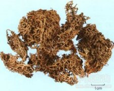

太白花

拼音
Tài Bái Huā
别名
高山石蕊
来源
地衣类石蕊科石蕊属植物山岭石蕊Cladonia alpestris （L.）Rabenh.，以全株入药。四季可采，去杂质，晒干。
生境分布
生于高山阴坡草丛中。分布黑龙江、吉林、辽宁、四川，云南、新疆、内蒙古、陕西等地。
药材特点
雀儿石蕊又名：山岭石蕊。 木状地衣。全体淡黄绿色，高可达10厘米。子器柄中空，稍硬而脆，上部密生树枝状分枝，潮湿时膨胀呈海绵状；下部与泥沙相接处渐次腐朽。粉子器块状，赤色，生于分枝顶端。
性状
性状鉴别 地衣体子器柄圆柱形，长5=-8cm，分枝稠密，枝腋有小穿孔，上半部黄绿色，下半部灰白色，基部逐渐腐朽。子器顶生，褐色，干时稍硬，易脆，湿时呈海绵状。
性味
淡，平。
功能主治
平肝潜阳，调经止血。用于头晕目眩，高血压病，偏头痛，鼻衄，崩漏，月经不调，白带。
用法用量
3～5钱。
化学成分
地衣枝状体含黑荼渍素（atranorin）,松萝酸（usnic acid）,珠光酸（perlatolic）,2-羟基-4-甲氧基-6-正戊基苯甲酸（2，4-dihydroxy-6-n-pentylbenzoic acid）.
药理作用
1：松萝酸有抗菌作用：特别是抗结核杆菌作用
2：详松萝条
摘录
《全国中草药汇编》